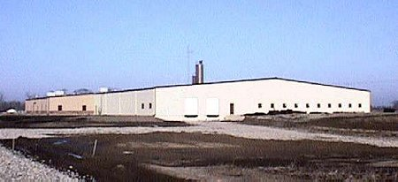
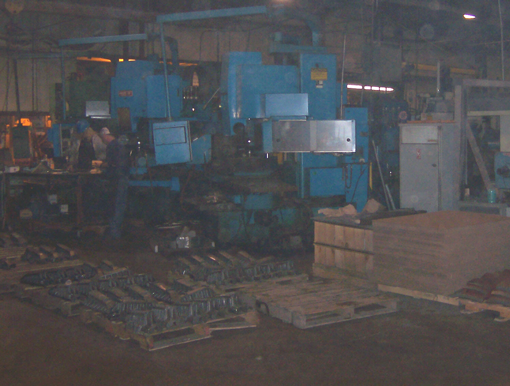
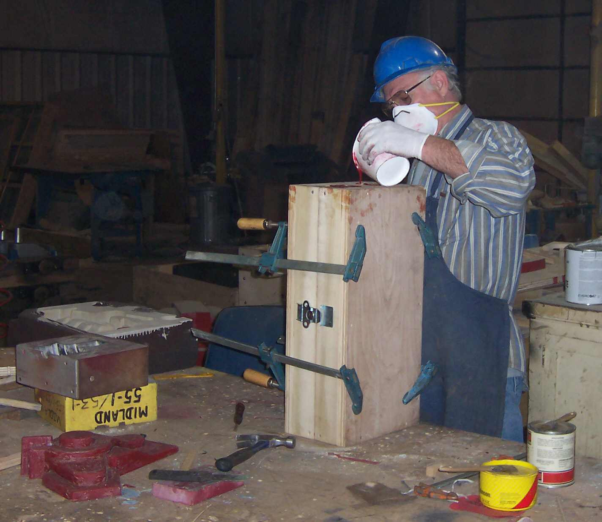
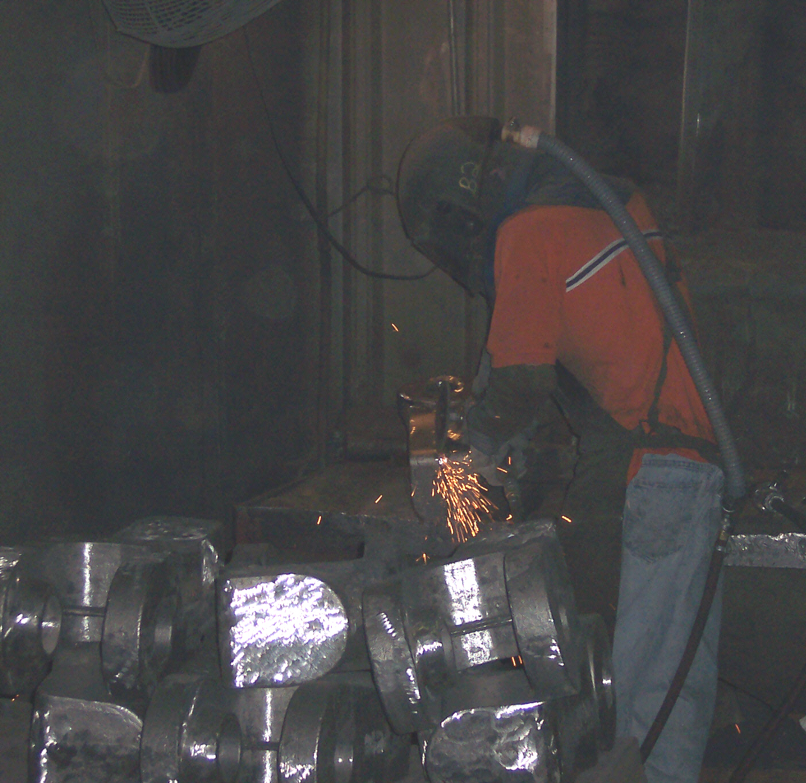
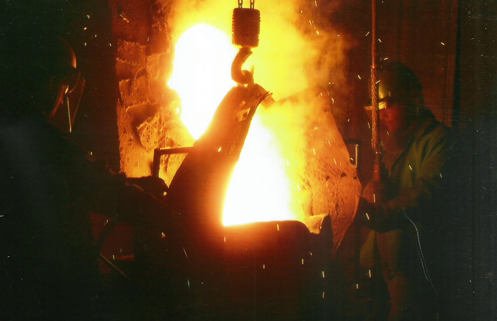
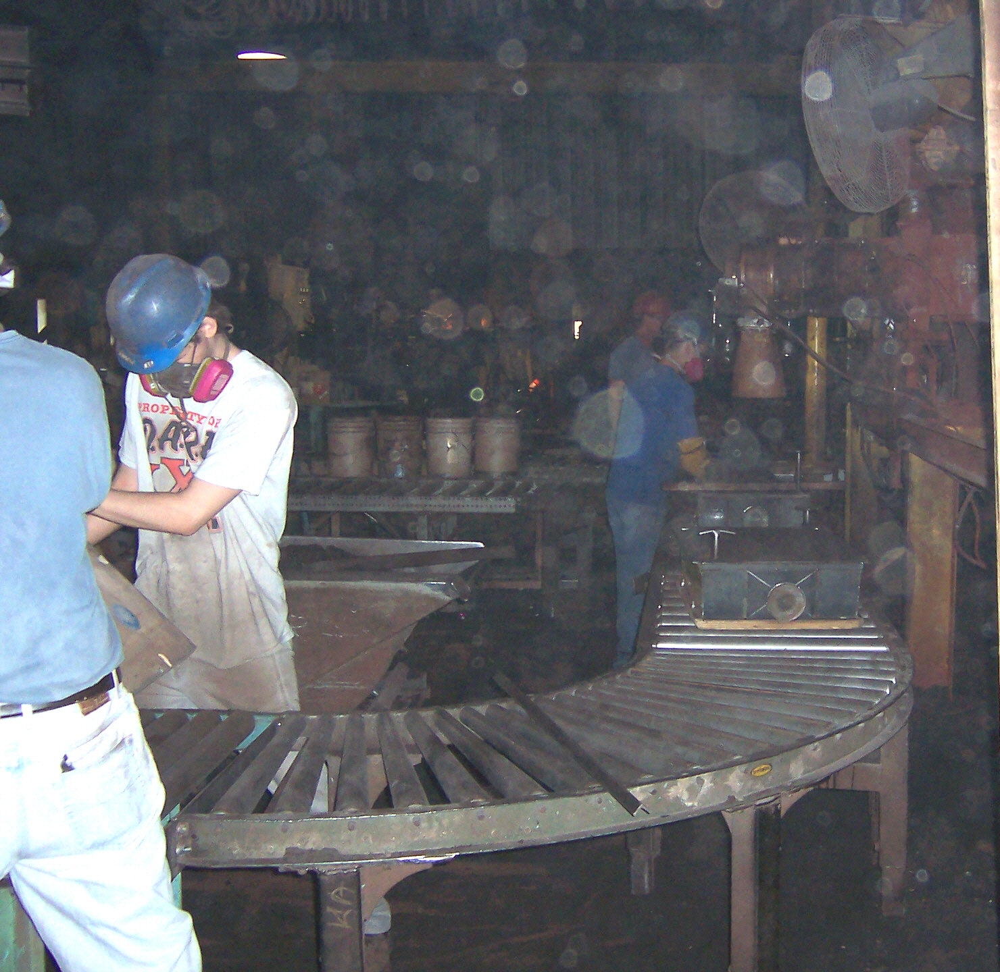
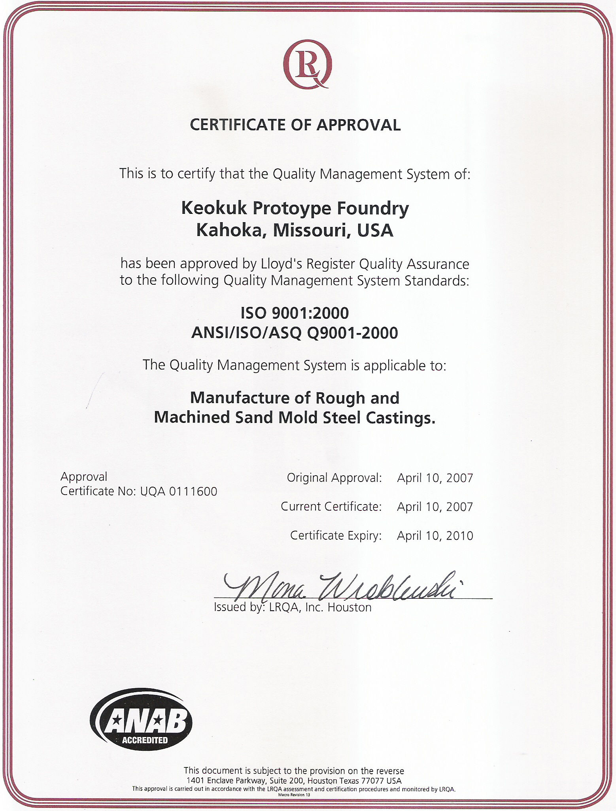
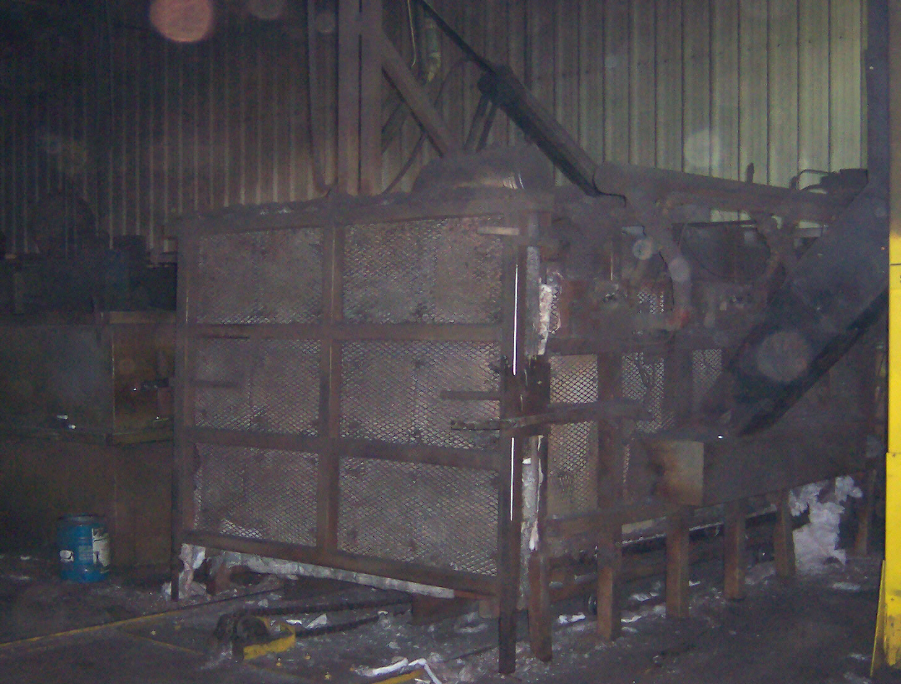
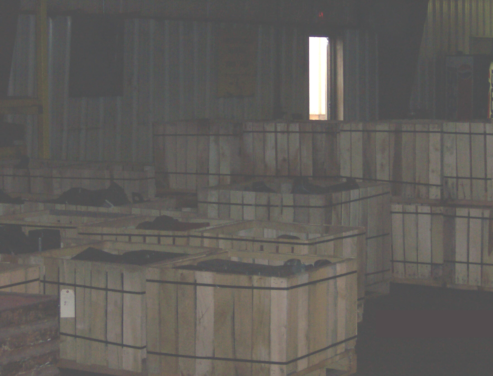
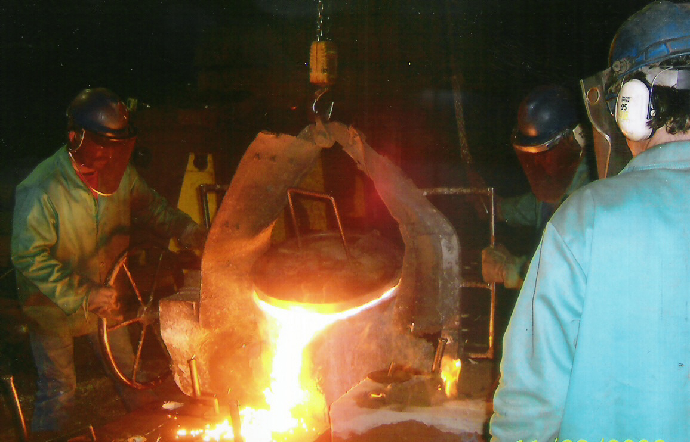

Welcome to KPF Steel Foundry
We specialize in the rapid production of short run steel castings with precision and efficiency.
The History of KPF
Keokuk Prototype Foundry Co., Inc. was founded in 1976 in Keokuk, Iowa. Operations began with 6 employees in a converted barrel factory, producing prototype and short run steel castings using the no-bake molding method. As years went by, demand for production runs increased, and so began the growth of Keokuk Prototype Foundry Co., Inc.
To keep up with customer demands, KPF added a pattern shop in 1987. “Custom Patterns” provided the ability to build patterns, mount the patterns on cope & drag boards, build the flasks, and rig the patterns on-site. This dramatically reduced the lead times, and costs for KPF customers.
The next evolution of KPF was the addition of a machine shop. In 1992 Keokuk Prototype Foundry constructed a new building to house the pattern shop, long-term pattern storage and the newly founded Keokuk Machining. The machine shop provided CNC machining of castings produced by the foundry.
By 1997 Keokuk Prototype Foundry had outgrown their facility in Keokuk, Iowa and a new building was constructed in nearby Kahoka, Missouri. Ground was broken on the new site on July 24, 1998 at Vine and Maple Streets. In February of 1999 the first “heat” was poured and full production began that spring. The new location prompted a name change and all three devisions; the foundry, pattern shop, and Keokuk Machining became incorporated under the name KPF STEEL FOUNDRY.
KPF STEEL FOUNDRY continues to grow and to fulfill customer expectations. In September of 2000, KPF STEEL FOUNDRY became ISO Certified. The following year a 12,000 sq. ft. addition was made to increase pattern storage and machining expansion. In 2002 new equipment was added that increased our casting cleaning department capabilities. In 2007 KPF STEEL FOUNDRY had made another addition to accommodate more core making equipment as well as six more CNC machines that had been added to further increase capacity.
Today KPF STEEL FOUNDRY remains a privately owned company, committed to our customers, our employees, and our community.
Our Comprehensive Services & Departments
The entire Foundry encompasses a 60,000 square foot building. It is divided into several different departments:
Machining Excellence
We have an on-site CNC Machine Shop. Customers can save time and money by having parts poured and machined in one place. The programs that we use in our machine shop are SolidWorks, SurfCam, and CamWorks.
Precision Pattern Shop
We have the capabilities to create a pattern from a blueprint provided by you. Or we can store a pattern here at our facities for you between orders. All patterns can be updated and fixed as needed to ensure that you get the best possible product.
Expert Finishing
The product is prepared to be sent out to the customer. All parts are put through a blaster, cut, welded, and grinded as each customer specifies. Each piece is inspected and made ready to be shipped out.
Advanced Furnace Operations
Scrap metal of similar composition will be melted in one of our induction furnaces. A chemical analysis of the molten bath is taken from a preliminary test slug. Any corrections are calculated and made prior to the final casting. A final test specimen is collected from the pour and verified. All parts are poured using the ASTM material requested by the customer. We can make parts ranging in sizes up to 2000 pounds.
No-Bake Molding
We use the No-Bake molding technique to produce sand molds from cope and drag patterns. Daily calibrations and sand testings are preformed to maintain the highest quality. Cores can be produced from our pep-set lines or from the Isocure core machines. The flow coat system is prefered over spraying to insure the highest quality casting.
Rigorous Testing & Quality Control
KPF can quote various types of testing depending on your various needs. We primarily out-source the majority of our testing with the exception of Magnetic Particle Inspection, which we do in-house upon customer request. Various certifications can be supplied to our customers by KPF upon request.
Precise Heat Treatment
We have two Heat Treatment ovens with the ability to heat the castings up to a maximum temperature of 2100 degrees Fahrenheit, and to water quench the castings in under 30 seconds.
Reliable Shipping & Logistics
KPF will ensure your castings reach their destination securely by shrink-wrapping the crates or banding your castings down on pallets. We ship your castings to the destination of your choice, using the trucking line you choose. Our current on-time delivery rate is 92 percent.
Specialized Products & Materials
At KPF we pour parts for a variety of different companies. To make things easier for everyone we use ASTM specifications for our materials. With the large number of materials available to the consumer we here at KPF do what we can for your specific needs. The materials that we currently pour are:
- Low Alloy Steels (e.g., 4318, 8625, 8630, 4100)
- High Alloy - Heat Resistant Steels (e.g., 310)
- High Alloy Steels (e.g., C5, CF3M, CF8C, CF8M)
- Carbon Steels (e.g., B50E54A, LCB, LCC, WCB, WCC, 1045)
Connect With Us 🤝
We're ready to assist with your next project. Reach out to our team through your preferred method below.
Email Inquiry
For quotes, delivery times, or material questions, contact Carol Chance.
kpf_carol@centurytel.netMailing Address
KPF Steel Foundry
PO Box 109
Kahoka, MO 63445